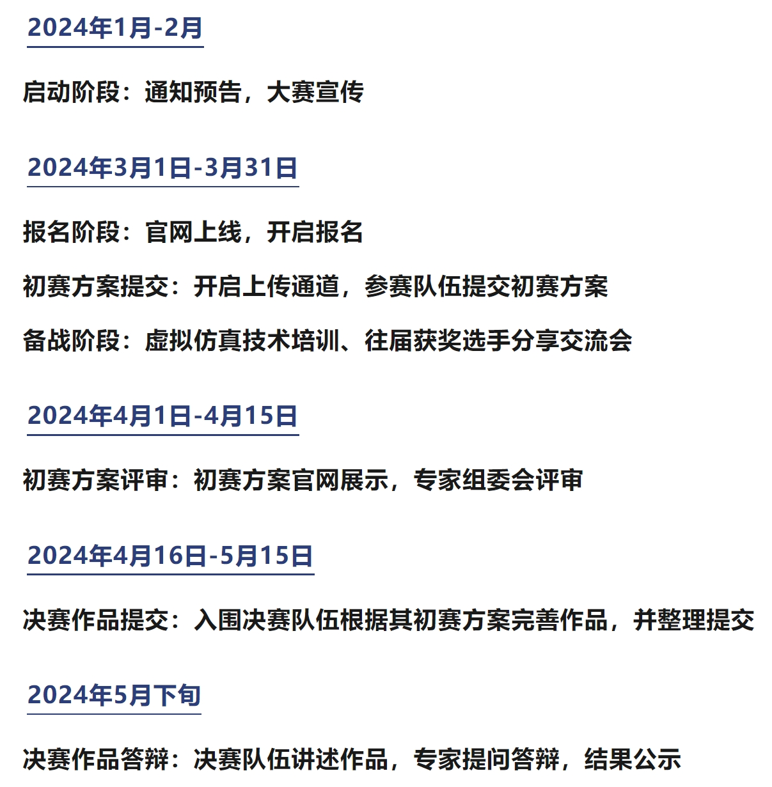

赛事预热丨北京市第二届暨清华大学第五届虚拟仿真创意设计大赛
一、大赛概述
北京市第二届暨清华大学第五届虚拟仿真创意设计大赛聚焦数字化时代中虚拟仿真技术在应用领域的发展， 旨在推进虚拟仿真技术与高等教育教学的深度融合，加快科学研究在虚拟仿真领域的发展，探索虚拟仿真技术应用于科学研究的新理念、 新方法、新模式。
二、大赛内容
参加大赛的各个队伍可结合主题与自身学科专业、行业背景，根据需要自行选择虚拟仿真软件（鼓励使用国产软件）， 自拟题目，设计虚拟仿真技术路线并提交方案；在方案通过初赛评审后，参赛队伍可通过查阅文献或参考已有数据， 根据方案进行仿真计算并得出结果。最终参赛作品将由参赛队伍进行展示答辩，大赛专家组委会进行评审。 参赛作品应具有一定的应用意义和使用价值，可应用于科学普及、实验教学、科学研究等领域。
三、大赛目的
- 增强学生对虚拟仿真技术的了解，拓宽学生视野；
- 为学生提供在虚拟空间的创作机会，培养学生的创新能力；
- 推动虚拟仿真在实验教学和科研工作的应用，促进各个学科专业在虚拟仿真领域的发展。
四、大赛日程

五、竞赛方式
- 本大赛为团体赛事，须以队伍为单位报名参赛。每支参赛伍可配备参赛选手最多3名，指导教师最多2名。 每支参赛队伍的第一选手将作为领队，与大赛组委会进行对接联络；
- 本届大赛采用线上/线下结合方式进行。其中报名、初赛方案提交、决赛作品提交将在仿真秀平台赛事官网进行； 初赛方案评审、决赛作品答辩的线上平台及线下地点待后续公告确认。
- 本大赛为免费赛事，大赛组委会不收取报名费用。其它因参赛产生的食宿、差旅、软硬件及耗材费用由参赛方自行承担。
六、竞赛要求
（1）参赛人员
本届大赛的参赛选手必须是2024年度高等学校在籍研究生或本科生，指导教师须为在校专职教师。（2）组队及分组
参赛队伍由符合上述人员要求的群体自行组成。每个参赛选手仅可加入1支参赛队伍，每个指导教师可最多同时指导2支参赛队伍。 大赛分为研究生赛道和本科生赛道，赛道确定以组内全部选手中最高学历为准。（3）队伍变更
参赛队伍报名确认后不得随意变更。如在大赛过程中出现成员因故无法参赛、成员替换、成员补充（需有相应名额剩余）等情况， 需由参赛队伍所属单位出具书面申请说明，并最晚于决赛作品答辩开赛10个工作日之前提交至大赛组委会，经核实后确认变更。 若参赛队伍整体无法参赛，则视为自动放弃竞赛。（4）报名参赛
参赛队伍领队须将队伍成员的报名参赛信息及材料如实提交至大赛官网。 参赛队伍成员应始终与提交确认的信息保持一致，并在各个比赛环节进行确认。（5）方案及作品
参赛队伍须签署《作品真实性及版权使用授权承诺书》等相关材料。 参赛队伍领队须在对应比赛环节将方案、作品及相关材料提交至大赛官网。 参赛队伍不可直接使用过往公开赛事中已参赛的方案或作品，可在其基础上进行创新修改，或重新设计。 方案或作品文档中不得包含参赛队伍的单位、人员及其它可能泄露参赛对象的信息。七、评审规则
大赛设置总分值100分，其中初赛方案评审分值50分，决赛作品答辩分值50分。各参赛队伍采取分步得分、 累计总分的计分方式，分别计算各环节分值，累计相加得出总成绩。总成绩相同队伍，以决赛分值较高者获胜。
八、奖项设定
进入决赛其余选手均颁发优秀奖证书，获得二等奖及以上队伍的指导教师颁发优秀指导教师证书。
奖项设置会根据参赛队伍数量和参赛作品质量做适当调整。
九、报名方式
请扫描下方二维码填写报名问卷，并加入赛事通知群聊，更多资讯将在群内公布！
十、联系方式
在竞赛过程中有任何比赛相关的问题，可联系大赛组委会对应负责的工作人员联系咨询，以下为大赛组委会联系方式。
- 耿老师：
- qhgzt@tsinghua.edu.cn
- 王老师：
- wangyuanhang@mail.tsinghua.edu.cn
- 咨询电话：
- 010-52167830
010-62773749 - 微信客服：
- fangzhenxiu555
- 联系邮箱：
- OSE@fangzhenxiu.com